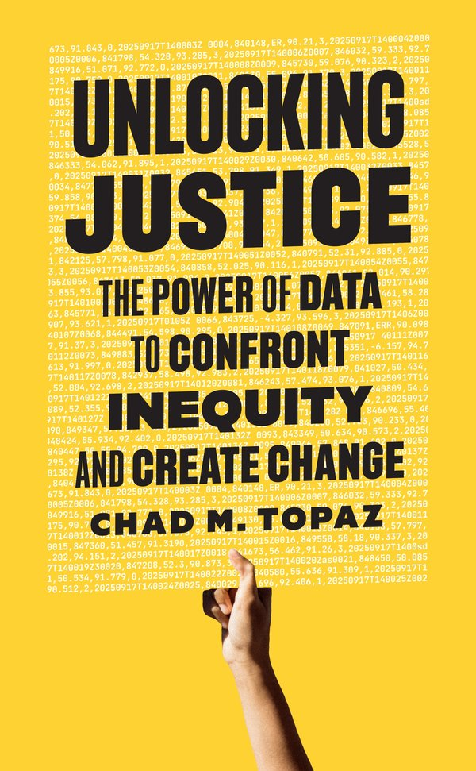

The Power of Data to Confront Inequity and Create Change
Princeton University Press — May 19, 2026
Unlocking Justice confronts America’s unfair criminal legal system—with data and humanity. Drawing on police call logs, chaotic city websites, fragmented judicial records systems, and more, it uncovers how data can empower communities, spark public debate, and drive advocacy.
From a rural New England town plagued by police misconduct to New York’s infamous Rikers Island Jail to federal courtrooms where racial bias hides, readers will journey across the nation, exploring the transformative power of data. Regardless of how they feel about numbers, they will come away with hope, knowledge, and the inspiration to demand transparency, accountability, and justice for all.
For speaking engagements related to the book, contact Sydney Bartlett at PUP Speaks.